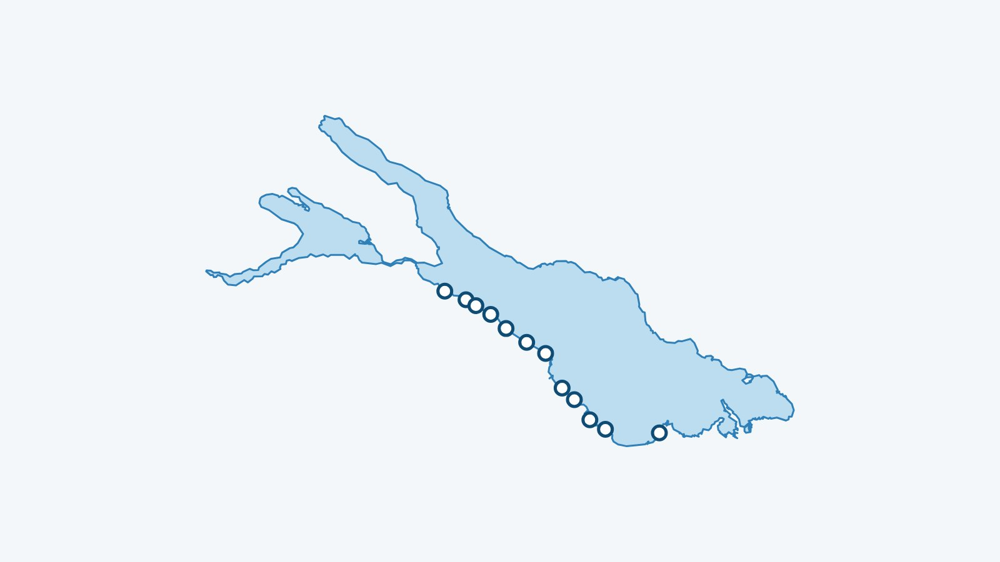

En bref
Mon Lac suit 12 plages du lac de Constance, avec la température de l’eau à 70 cm sous la surface quand elle est calculée. Voici la liste, puis les adresses utiles autour de l’eau.
Le lac de Constance couvre environ 473 km², descend jusqu’à 251 m et se trouve à 395 m d’altitude. Ses rives sont partagées entre Suisse, Allemagne et Autriche.
Les 12 plages suivies du lac de Constance
Entre parenthèses : la température du matin du 12 novembre 2026, à 70 cm sous la surface (modèle Alplakes).
- Münsterlingen (11,1 °C)
- Landschlacht (11,1 °C)
- Altnau (11,1 °C)
- Güttingen (11,1 °C)
- Kesswil (11,1 °C)
- Uttwil (11,1 °C)
- Romanshorn (11,1 °C)
- Egnach – Wiedehorn (11,1 °C)
- Arbon (11,1 °C)
- Steinach (11,1 °C)
- Horn (11,1 °C)
- Altenrhein (11,1 °C)
Pour ce lac, l’eau est une seule valeur pour tout le lac : les plages affichent le même chiffre.
Un verre ou un repas au bord du lac de Constance
- Strandbad Buchhorn, Arbon : Terrasse légèrement surélevée face au lac ; le Heimatschutz compte ce bain parmi les plus beaux de Suisse.
- Restaurant Hafen, Romanshorn : Directement sur l’eau, dans le bassin du port de Romanshorn.
- Restaurant Fischerhaus, Kreuzlingen : Biergarten décontracté directement sur la rive.
- Restaurant Schiff, Altnau : Sur la rive, avec vue sur le lac : en été, grande terrasse directement au bord du lac de Constance.
- Krone am See, Altnau : Au bord du bassin du port ; on peut commander en ligne depuis la plage ou le bateau. Horaires réduits en hiver.
- Restaurant Schiff Kesswil, Kesswil : Directement au bord du lac de Constance, avec vue sur le lac et une salle à fondue.
Saunas au bord du lac de Constance
Chaque fiche renvoie au site du loueur quand il existe. Horaires et prix changent : à confirmer auprès de lui.
- Wagensauna, Romanshorn (et rives voisines), près de Romanshorn : Sauna mobile en hiver sur la rive thurgovienne du lac de Constance (Romanshorn, Staad, Kesswil, Goldach, Bottighofen) : de 9h à 22h, dès 30 francs l’heure pour 1 à 2 personnes. Lieux changeants : voir le site.
À lire aussi
L’eau du Léman en ce moment
La température de chaque plage est dans l’app Mon Lac, mise à jour toutes les trois heures.